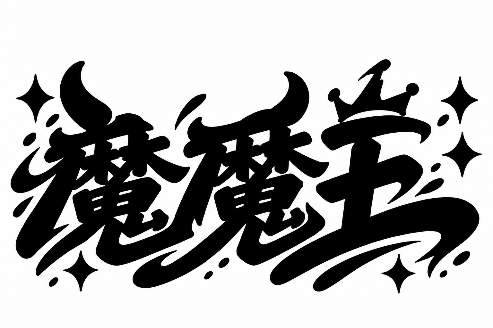

报告 ID：b35e822deaec930141112657。未批准；参数、原稿与轮廓须由所有者核实。
{
"kind": "REAL_ASSET_REVIEW",
"status": "DRAFT",
"asset_id": "momowang-signature",
"profile": "screen",
"variant": "default",
"source": {
"path": "originals/5c15e93fb8e37a634e5421816424a763ccb4d17769a67fbc48fb9eba93e175c4.png",
"sha256": "5c15e93fb8e37a634e5421816424a763ccb4d17769a67fbc48fb9eba93e175c4",
"kind": "raster",
"metadata": {
"width": 1536,
"height": 1024,
"format": "png",
"orientation": 1,
"has_alpha": false
}
},
"environment": {
"node": "24.18.0",
"platform": "win32",
"arch": "x64",
"tool": "0.1.0",
"lock": "0aef9393cb0806494db0f371faecebaf00641a28de5efac8c5ca1a3c7e5a2bc4",
"dependencies": {
"@resvg/resvg-js": "2.6.2",
"ajv": "8.17.1",
"fflate": "0.8.2",
"pdfkit": "0.17.2",
"saxes": "6.0.0",
"sharp": "0.34.5",
"svg-pathdata": "8.0.0",
"yaml": "2.9.0"
}
},
"pending": [
"光学锚点",
"安全留白",
"黑白最小本体显示尺寸",
"profile screen",
"viewBox",
"artwork_bounds",
"aspect_ratio",
"optical_anchor_uv",
"safe_space_height",
"黑白最小本体显示尺寸",
"needs_vectorization：尚无可比较的矢量候选，叠加对照不可用"
],
"baselines": {},
"fingerprint": null,
"geometry": null
}
批准命令：npm run signature -- approve --review-id b35e822deaec930141112657 --reviewer YOUR_NAME